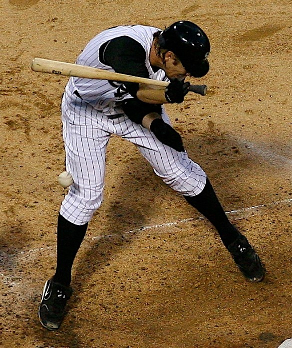

_(51101815218).png){kind=link}
library(fpp3)
library(tidyverse)
library(patchwork)
injuries <- read_csv("mlb_injuries_monthly.csv") |>
mutate(Month = yearmonth(Month)) |>
as_tsibble(index = Month)MLB Injuries - Introductory Time Series Analysis
Time series plots
Time series decomposition
Residual analysis
Simple forecasting
Exploring MLB injury data through time series analysis and forecasting.
Welcome video
Introduction
In this module, you will explore Major League Baseball (MLB) injury data through time series analysis and forecasting. The dataset contains monthly injury counts from 2000 to 2023. You will learn how to create time series plots, decompose time series data, and forecast future injury counts.
Coming off of COVID-19 breaks, the MLB saw a rash of injuries in the shortened 2020 season and the 2021 season.
In the image below Washington Nationals star shortstop Trea Turner attempts to shake off a hit-by-pitch injury in the 9th inning of a game against the Atlanta Braves April 26th, 2021. 
Image source: All-Pro Reels from District of Columbia, USA, CC BY-SA 2.0, via Wikimedia Commons
Injuries significantly impact a team’s performance and can be costly to the organization. Despite the rise of analytics and specialized training for players, MLB injuries feel as though they are happening more and more frequently. Are injuries on the rise in the MLB? Are there certain months where injuries are more prevalent? Are future amounts of injuries predictable? Let’s dig into the data and find out!
NOTE: Time series analysis is a powerful tool for understanding trends and patterns in data. It is used in many fields, including finance, economics, and epidemiology. In this module, we will focus on time series analysis in the context of MLB injuries.
Getting started: MLB Injury data
We will begin our time series analysis by loading the MLB injury data. The dataset contains monthly injury counts from 2000 to 2023.
Run the following code chunk to load the necessary libraries and the MLB injury data. In this code chunk the data is also converted to a tsibble object, which is a time series object that includes a time index and one or more columns of data. This makes it easier to work with time series data in R.
TIP: As you follow along in the lab, you should run each corresponding code chunk in your .qmd document.
TIP: You will most likely need to install the fpp3 package to complete this lab. You can install it by running the following code chunk:
install.packages("fpp3")By using the glimpse function as shown below, we can see structure of the injuries data. The Month column contains the date of each observation, and the Count column contains the number of players sent to the injured list each month.
glimpse(injuries)Rows: 288
Columns: 2
$ Month <mth> 2000 Jan, 2000 Feb, 2000 Mar, 2000 Apr, 2000 May, 2000 Jun, 2000…
$ Count <dbl> 0, 0, 1, 9, 27, 6, 6, 3, 2, 0, 0, 0, 0, 0, 57, 59, 79, 92, 62, 5…Variable Descriptions
| Variable | Description |
|---|---|
Month |
The month and year |
Count |
The number of players sent to the IL that month |
Click here to learn more about the 10-day Injured List in Major League Baseball. Other types of ILs can also be found on the site.
Visualizing Time Series Data
The first step in any time series analysis is to visualize the data. This helps us understand the underlying patterns and trends in the data. There are four major things that we are looking for when we check our time series visualizations:
Trend: A long-term increase or decrease in the data.
Seasonality: Repeating patterns based on a specific time period.
Cyclicity: Repeating patterns that are not based on a specific time period.
Outliers: Unusual data points that do not fit the normal pattern.
We will create a time series plot of the monthly injury counts to see how the number of injuries has changed over time.
TIP: The autoplot() function is a convenient way to create time series plots in R. It automatically selects an appropriate plot type based on the data provided.
autoplot(injuries, Count) +
labs(title = "Monthly MLB Injury Counts",
x = "Year",
y = "Number of Injuries")Autocorrelation
Autocorrelation is a measure of the linear relationship between lagged values of a time series. It can be used to help determine if there is trend or seasonality, as well as what time the seasonality is occurring at. If the autocorrelation is high for a particular lag, it suggests that the value at that lag is directly related to the value at the current time point. If a value is significantly negative, it suggests that the value at that lag is inversely related to the value at the current time point.
TIP: Lag is the number of time periods that separate the current observation from the previous observation. For example, a lag of 1 means that the current observation is compared to the previous observation, a lag of 2 means that the current observation is compared to the observation two time periods ago, and so on.
For example if there are high autocorrelations at lags 1, 2, and 3, it suggests that there is a trend in the data, since the value at time t is related to the values at times t-1, t-2, and t-3.
If the autocorrelation is high at multiples of a particular lag, such as lag 12, 24, 36, …, it could suggest that the data has a monthly seasonal pattern. If the data was based on daily observations, a high autocorrelation at lag 7 would suggest a weekly pattern.
If the autocorrelation is not significant at most of the lags, with none of the autocorrelations greatly exceeding the significance bounds, it suggests that the data is white noise. For a white noise series, we would expect the autocorrelations to be close to zero for all lags and the variation to be random.
NOTE: When performing hypothesis tests we set an alpha level, which is the probability of rejecting the null hypothesis when it is true. The default alpha level is 0.05, which means we have a 5% chance of rejecting the null hypothesis when it is true. When we do multiple tests, such as in an autocorrelation plot, the probability of making at least one Type I error (false positive) increases and can be written as \(1 - (1 - \alpha)^n\), where \(n\) is the number of tests. If you conduct 20 tests, the probability of making at least one Type I error is \(1 - (1 - 0.05)^{20} = 0.64\). This helps us understand that a significant result in one of the lags may be due to chance, and the time series may still be white noise.
We can look at an autocorrelation plot using the ACF() function.
injuries |>
ACF(Count) |>
autoplot() +
labs(title = "Autocorrelation of Monthly MLB Injury Counts",
x = "Lag",
y = "Autocorrelation")Decomposition
Oftentimes when performing a time series analysis we want to decompose the data into its trend, seasonal, and random components to see each part individually.
Additive Decomposition is a decomposition into these three components where the observed data is the sum of the trend, seasonal, and random components.
\[y_t = T_t + S_t + R_t\]
Speaking of breaking things down, when looking at injured players by team it can be found that since 2000 the Dodgers have had the most players sent to the injured list with 625. On the opposite end of the spectrum the White Sox have had the fewest players sent to the injured list with 371.
Joe Crede of the Chicago White Sox is hit by a pitch during a game in 2006. The White Sox have had the fewest injuries since 2000.

Image Source: User SecondPrint Productions (Original version) User Mattingly23 (Crop), CC BY 2.0, via Wikimedia Commons
{kind=link}
Where:
- \(y_t\) is the observed data at time \(t\)
- \(T_t\) is the trend component at time \(t\)
- \(S_t\) is the seasonal component at time \(t\)
- \(R_t\) is the random component at time \(t\)
This method is useful when the seasonal variation around the trend-cycle doesn’t change as the level of the series changes.
However, if the seasonal variation increases as the level of the series increases, then multiplicative decomposition is more appropriate. In this case, the observed data is the product of the trend, seasonal, and random components.
\[y_t = T_t \times S_t \times R_t\]
Classical Decomposition
There are two common methods for decomposing time series data: classical decomposition and STL decomposition. In this module we will focus on classical decomposition.
Classical decomposition (additive) has four main steps:
Computing a trend-cycle component (\(T_t\)) using a moving average. A moving average is a technique for smoothing time series data by averaging the values of neighboring points. This helps to remove short-term fluctuations and highlight longer-term trends.
Computing a series without the trend-cycle component (\(y_t - T_t\)).
Estimating the seasonal component (\(S_t\)) by averaging the values from the detrended series for the season.
Computing the remainder component (\(R_t\)) by subtracting the trend-cycle and seasonal components from the original series. \(R_t = y_t - T_t - S_t\)
We can use the classical_decomposition function inside of the model() function to decompose our time series data.
injuries |>
model(classical_decomposition(Count)) |>
components() |>
autoplot() +
labs(title = "Classical Additive Decomposition of Monthly MLB Injury Counts")Classical multiplicative decomposition works similarly to the additive decomposition, but with a few key differences.
The detrended series is computed as \(y_t / T_t\) instead of \(y_t - T_t\).
The seasonal component is estimated as \(S_t = y_t / T_t\) instead of \(y_t - T_t\).
The remainder component is computed as \(R_t = y_t / (T_t \times S_t)\) instead of \(y_t - T_t - S_t\).
NOTE: Ideally, after doing a decomposition, the remainder component should be white noise.
Classical multiplicative decomposition can be used by setting the type argument to "multiplicative" in the classical_decomposition() function.
STL Decomposition
Seasonal and Trend decomposition using Loess (STL) is a more advanced method for decomposing time series data. It is more flexible than classical decomposition and can handle any type of seasonality, not just monthly or quarterly. It also allows the user to control the length of the smoothing window for the trend-cycle. Lastly, it is more robust to outliers so that they do not affect the trend and seasonal estimates as much.
Below is an example of how to use the STL() function to decompose the time series data.
injuries |>
model(STL(Count ~ trend(window = 21)+
season(window = "periodic"),
robust = TRUE)) |>
components() |>
autoplot() +
labs(title = "STL Additive Decomposition of Monthly MLB Injury Counts")TIP: The window argument in the trend() function controls the length of the smoothing window for the trend-cycle. The larger the window, the smoother the trend. This value should always be an odd number. trend(window = 21) is a common choice for monthly data.
TIP: The window argument in the season() function controls how many years the seasonal component should be estimated over. The default value is 11. When the seasonal window is set to periodic season(window = "periodic"), it is the equivalent setting the window to all of the data. When periodic is used, the seasonal component is assumed to be the same each year. The seasonal window argument should always be an odd number or “periodic”.
NOTE: You can actually forecast with decomposition as well. If you’d like to learn more about this click here
Basic Forecasting Methods
Now that we’ve explored the data and decomposed it into its components to better understand the patterns in the data, we’ll move on to forecasting. There are many methods for forecasting time series data, but we’ll focus on some basic methods in this section.
The Mean Method
An extremely simple method for forecasting is the mean method. This method forecasts the next observation as the average of all the observations in the training data. This method will produce a flat forecast that is equal to the mean of the training data. The mean method is useful when the data doesn’t have a trend or seasonality.
The Naive Method
The naive method is another simple forecasting method. It forecasts the next observation as the value of the last observation in the training data. This method will produce a flat forecast that is equal to the last observation in the training data. The naive method is useful when the data appears to be random.
Seasonal Naive Method
The seasonal naive method is similar to the naive method, but it forecasts the next observation as the value from the same season in the previous year. This method will produce a repeating pattern of forecasts that are equal to the observations from the same season in the previous year. (Basically forever repeating the last year’s pattern). The seasonal naive method is useful when the data has a strong seasonal pattern but no trend.
Drift Method
The drift method is a simple forecasting method that assumes a linear trend in the data. It forecasts the next observation as the value of the last observation plus the average change between observations. This method will produce a forecast that will continue on a linear trend from the first observation and through the last observation in the training data. The drift method is useful when the data has a linear trend but no seasonality.
Evaluating Forecasting Models
Residuals
Checking the residuals of a model is one of the most effective ways to see how well the model is performing. Residuals are the differences between the observed values and the values predicted by the model. \(e_t = y_t - \hat{y}_t\)
It is important to note that when we are talking about residuals in this module that we are referring to the innovation residuals. Most of the time innovation residuals are the same as regular residuals, such as with our seasonal naive model. Innovation residuals are the residuals that are left over after accounting for changes made to the data such as transformations or differencing. These residuals are the ones that are used to check the model assumptions and to evaluate the model’s performance.
There are 3 main things to look at when evaluating residuals:
Do the residuals appear to be white noise? Remember that white noise has a mean of 0, constant variance, and shows no obvious patterns. This can be checked by looking at a time plot of the residuals.
Are the residuals normally distributed? This can be checked by looking at a histogram of the residuals or by using a normal probability plot.
Are the residuals uncorrelated? This can be checked by looking at the ACF plot of the residuals. There are also statistical tests that can be used to check for autocorrelation in the residuals such as the Ljung-Box test. We can use the
Box.test()function in R to perform this test.
The formula for the test statistic for a Ljung-Box test is:
\[Q^{*} = T(T+2) \sum_{k=1}^{l} \frac{r^2_k}{T-k}\]
where:
- \(T\) is the number of observations
- \(l\) is the max number of lags
- \(r_k\) is the sample autocorrelation at lag \(k\)
The null hypothesis for the Ljung-Box test is that the data is not distinguishable from white noise. If the p-value is less than the significance level, we reject the null hypothesis and conclude that the data is autocorrelated.
Thankfully there is a very easy way to check all of these at once in R using the gg_tsresiduals() function.
Testing and Training for Point Estimate Evaluations
If you want to evaluate the point estimates of a model, you can use a testing and training split. This involves training the model on the first part of the data and then testing the model on the second part of the data. This allows you to see how well the model can forecast future observations.
For this example, we will split the data into a training set that contains the first 75% of the data and a testing set that contains the last 25% of the data. This means we will train the models on the data from January 2000 to December 2017 and test the models on the data from January 2018 to December 2023.
TIP: 75-25 is a common split for training and testing data, but you can use any split that makes sense for your data. Generally the more data you have, the less percentage you need for testing. Other common splits are 70-30 or 80-20.
training <- injuries |> filter(year(Month) < 2018)
testing <- injuries |> filter(year(Month) >= 2018)Now that we have our training and testing data, we can fit the models to the training data and then forecast the testing data.
injury_fit <- training |>
model(mean = MEAN(Count),
naive = NAIVE(Count),
snaive = SNAIVE(Count ~ lag('year')),
drift = RW(Count ~ drift()))
injury_forecasts <- injury_fit |>
forecast(new_data = testing)TIP: You can fit multiple models at once by using the model() function as seen in the code to the left. The values to the left of the = are the names we are giving to the models and the values to the right of the = are the models we are fitting to the data.
TIP: When using the forecast() function, you can specify the new data you want to forecast by using the new_data argument. In this case, we are forecasting for the testing data.
Let’s visualize the forecasts from the training data and compare them to the testing data.
injury_forecasts |>
autoplot(injuries, level = NULL) +
labs(title = "Forecasting Methods for Monthly MLB Injury Counts")+
guides(color = guide_legend(title = "Forecast"))The seasonal naive method certainly appears to be the best forecast.
We can also evaluate these models using the accuracy() function. This function calculates a variety of accuracy measures for the forecasts, including the mean absolute error, root mean squared error, mean absolute percentage error, and more.
The mean absolute error (MAE) is the average of the absolute errors between the forecasts and the actual values. It is a measure of the average magnitude of the errors in the forecasts. We want this value to be as close to 0 as possible.
The formula for the mean absolute error is: \[\text{MAE} = \frac{1}{n} \sum_{i=1}^{n} | y_i - \hat{y}_i |\] where \(y_i\) is the actual value and \(\hat{y}_i\) is the forecasted value.
The root mean squared error (RMSE) is the square root of the average of the squared errors between the forecasts and the actual values. It is a measure of the standard deviation of the errors in the forecasts. We want this value to be as close to 0 as possible.
The formula for the root mean squared error is: \[\text{RMSE} = \sqrt{\frac{1}{n} \sum_{i=1}^{n} (y_i - \hat{y}_i)^2}\] Where \(y_i\) is the actual value and \(\hat{y}_i\) is the forecasted value.
The mean absolute percentage error (MAPE) is the average of the absolute percentage errors between the forecasts and the actual values. It is a measure of the accuracy of the forecasts. We want this value to be as close to 0 as possible.
The formula for the mean absolute percentage error is: \[\text{MAPE} = \frac{100}{n} \sum_{i=1}^{n} \left| \frac{y_i - \hat{y}_i}{y_i} \right|\] where \(y_i\) is the actual value and \(\hat{y}_i\) is the forecasted value.
The code below displays the accuracy measures for the forecasts.
accuracy(injury_forecasts, testing)# A tibble: 4 × 10
.model .type ME RMSE MAE MPE MAPE MASE RMSSE ACF1
<chr> <chr> <dbl> <dbl> <dbl> <dbl> <dbl> <dbl> <dbl> <dbl>
1 drift Test 86.0 122. 86.0 -Inf Inf NaN NaN 0.698
2 mean Test 38.7 94.9 79.1 -Inf Inf NaN NaN 0.698
3 naive Test 86.0 122. 86.0 100 100 NaN NaN 0.698
4 snaive Test 14.3 58.4 34.5 -Inf Inf NaN NaN 0.424This confirms that the seasonal naive method is the best forecast, as it has the lowest MAE and RMSE values. The MAPE is shown at -Inf to Inf because some of the actual values are 0, which causes the percentage error to be infinite.
Forecasting
Since the seasonal naive method appears to be the best for forecasting based on our training and testing data, we will use this method to forecast the future number of Tommy John surgeries in MLB players.
final_fit <- injuries |>
model(SNAIVE(Count ~ lag('year')))This model is then used to forecast for the next 3 years.
final_forecasts <- final_fit |>
forecast(h = 36)TIP: The forecast() function can be used to forecast for a specific number of periods into the future by using the h argument. In this case, we are forecasting for 36 months (3 years). This could also be written as forecast(h = "3 years").
The code below visualizes the forecasted values.
final_forecasts |>
autoplot(injuries) +
labs(title = "Forecasting MLB Injuries")+
guides(color = guide_legend(title = "Forecast"))
More Practice
We have covered a lot of ground in this module. To practice what you have learned, try the exercises below on your own. Each of these exercises will use data regarding the number of Tommy John surgeries performed by year on MLB and MiLB players. The data can be downloaded below:
The image below shows that ulnar collateral ligament in the elbow of a pitcher. This ligament is often injured due to the extreme torque placed on the elbow during the pitching motion as it whips the arm forward.
Image Source: R.J. Molenaars, CC BY-SA 4.0, via Wikimedia Commons
{kind=link}
Injured Earlier?
Not only have the number of Tommy John surgeries increased over time for MLB and MiLB players, but high school and college players are also undergoing the surgery at increasing rates. Early career injuries are becoming more common, with some players undergoing the surgery long before they reach the professional level.
Nathan Eovaldi, pitcher for the 2018 World Series Champion Red Sox and 2023 World Series champions Texas Rangers, underwent Tommy John surgery in 2007 in high school. He was drafted by the Los Angeles Dodgers in 2008 and made his MLB debut in 2011. Eovaldi has since had a successful career, despite undergoing a second Tommy John surgery in 2016.
Image Source: Arturo Pardavila III on Flickr (Original version) UCinternational (Crop), CC BY 2.0, via Wikimedia Commons)
{kind=link}
Conclusion
In this module you have learned how to visualize time series data. You have also learned how the number of injuries in the MLB have changed over time. We have looked at how the injuries in the MLB change based on the month of the season, seeing higher rates shortly after the season starts and at the end of the season. Major outliers in the number of injuries were noted during and directly after the COVID-19 pandemic. Lastly, you looked at different forecasting methods - mean, drift, naive, and seasonal naive- to forecast the number of injuries in the MLB. Performance metrics and residual plots were used to determine the best model. A seasonal naive model was the best of the simple models we looked at, since it was able to capture the seasonality in the monthly data.
Additionally, you have learned about increases in Tommy John surgeries among baseball players and have now performed a simple time series analysis all by yourself.
References
- Hyndman, R.J., & Athanasopoulos, G. (2021). Forecasting: Principles and Practice (3rd ed.). OTexts: Melbourne, Australia. Online